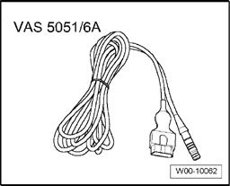

Passenger Occupant Detection System (PODS) (USA Only), Performing Basic Setting
Passenger Occupant Detection System (PODS) (USA Only), Performing Basic Setting
Special tools, testers and auxiliary items required

- Vehicle Diagnosis, Testing and Information System VAS 5051A

- Diagnostic cable VAS 5051/6A (5 m)
Basic Setting Procedure
Procedure
- Connect Vehicle Diagnosis, Testing and Information System VAS 5051A.
- Select "Guided Fault Finding" on Vehicle Diagnosis, Testing and Information System VAS 5051A.
- Using the "Go to" button, select "Function/Component selection" and the following menu points in sequence:
- "Body"
- "Body Repairs"
- "01 - On Board Diagnostic (OBD) capable systems"
- "Airbag"
- "Airbag functions"
- "Seat occupied recognition basic setting"